Viva La Vida: Historia
En 2006, diversas fuentes apuntaron a que Coldplay se tomaría una pausa de cinco años hasta lanzar nuevo material. Al parecer su nuevo álbum no vería la luz hasta 2010. Sin embargo, a través de Capitol Records, la cadena MTV anunció que, si bien el grupo no continuaría promocionando X&Y, en noviembre la banda volvería al estudio. La fecha de publicación, que ciertos rumores situaron a finales de 2007, fue desmentida por el grupo.
Pero antes de comenzar las grabaciones la banda hizo una pequeña gira por Latinoamérica. De esta gira el grupo tomó algunas influencias musicales de la zona que luego se plasmarían en el álbum.
A finales de enero de 2007 se confirmó la presencia de Brian Eno como productor del nuevo disco de Coldplay. Junto al grupo se trasladó a una antigua panadería donde construyeron un estudio: The Bakery·
Después de admitir que no quedaron contentos con el resultado de X&Y, en The Bakery la banda comenzó a buscar un sonido diferente para su nuevo álbum. Para empezar Chris Martin, siguiendo un consejo de Brian Eno, moduló su tono de voz hacia tonos más bajos. De esa forma cambió por primera vez su característico falsete. El sonido de la banda también se vio cambiado. En este caso la banda despertó mucho interés por los sonidos de España y Latinoamérica. La influencia no se encontraba en un sonido específico, sino en la idea general de las canciones en conjunto. Uno de los temas en los que más se nota la presencia de este sonido es Don Quixote. La canción nunca ha sido lanzado de forma oficial por la banda, pero la han tocado en algunos directos.
Durante las grabaciones la banda mantuvo un contacto constante con el público a través de su página web. En diciembre de 2007 arrojaron indicios de que la grabación del álbum estaba casi terminada. Dicho comunicado estuvo firmado bajo en nombre Prospekt, lo que dio a entender a muchos que se trataba del próximo nombre del álbum. La banda desmintió esto rápidamente.
Además anunciaron que el disco se había visto influenciado por las novelas de Charles Dickens y el libro Los Miserables.
El 18 de marzo de 2008 se anunció tanto la fecha como el nombre del álbum: Viva la Vida or Death and All His Friends. Un mes después hicieron lo mismo con el listado de canciones.
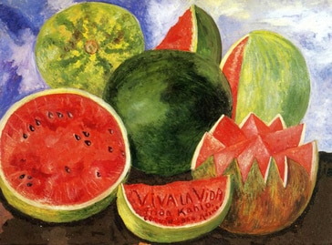
La portada del álbum presenta al cuadro de La Libertad guiando al pueblo, símbolo de la Revolución Francesa, con una pintada en blanco que reza Viva la Vida. Fue diseñada por Coldplay y Tappin Gofton.
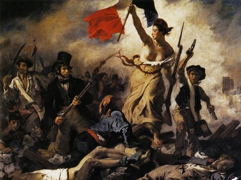
Además, el álbum presenta otras imágenes creadas por la banda.
La primera imagen muestra un mapa de Brasil con parte del tema Glass of Water, incluido en el EP Prospekt's March.
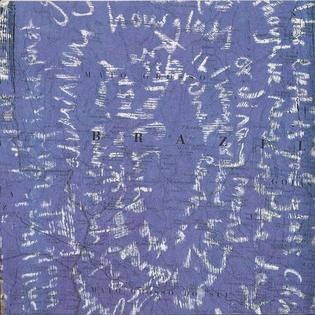
La siguiente imagen muestra parte de la composición de 42.
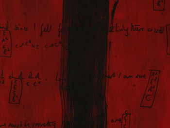
El dibujo relacionado con el tema Cemeteries of London muestran a Londres con un fondo violeta y el título de la canción. También se puede apreciar parte de la letra.
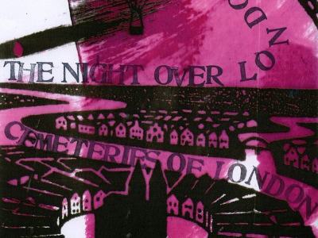
Reign of Love, el tema escondido al final de Lovers in Japan también cuenta con imagen propia, con el título sobre un fondo verde.
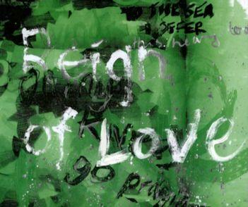
En medio del folleto del álbum se encuentran las mayorías de las letras de los temas sobre una figura abstracta.
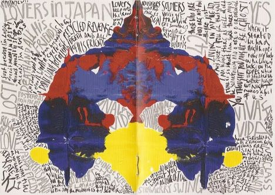
La imagen de Yes consiste en un puñado de manchas rojas sobre fondo blanco y el verso "lord lead me not into temptation". Dicha frase está sacada de la canción, y esta a su vez de la Biblia.
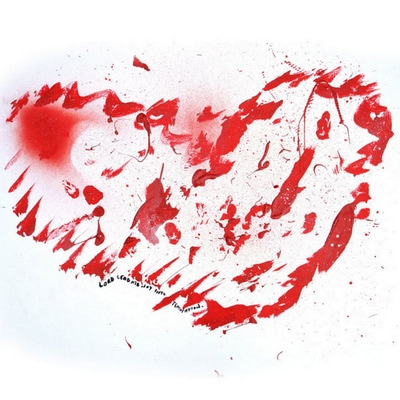
Otra imagen muestra la letra de Viva la Vida sobre un fondo azul.
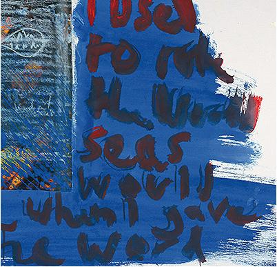
Para Death and All His Friends se usaron tan solo tijeras y papel.
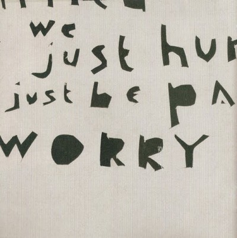
Por último, una imagen que muestra el número siete en números romanos cierra el folleto.
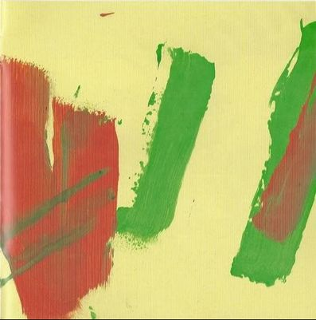
Viva la Vida or Death and All His Friends fue lanzado el 12 de junio. Se convirtió en el álbum más vendido de su año y también el más descargado en la historia de las ventas digitales. Las críticas fueron generalmente positivas. Desde Allmusic compararon el disco con el aclamado A Rush of Blood to the Head. Entertainment Weekly dijo que este era el mejor disco de la banda hasta la fecha.
The Guardian fue más duro con la banda. Criticó una posible pérdida de originalidad, aunque admitió que este álbum era un avance con respecto a los anteriores.
Tras publicar el álbum, Coldplay aun tenían unos temas que no llegaron a grabar antes de la salida de este. Los temas descartados formaron parte de un EP titulado Prospekt's March, que más tarde formaría el listado de canciones de la edición especial de Viva la Vida or Death and All His Friends.
La gira Viva la Vida Tour fue anunciada el 27 de mayo de 2008. Tuvo un total de 172 conciertos por todos los continentes. Los tres primeros conciertos fueron gratuitos. Se realizaron en Londres, Barcelona y Nueva York. Los escenarios albergaban un espectáculo muy visual. Usualmente añadían imágenes relacionadas con el álbum. Chris Martin usó un vestuario característico de la Revolución Francesa.
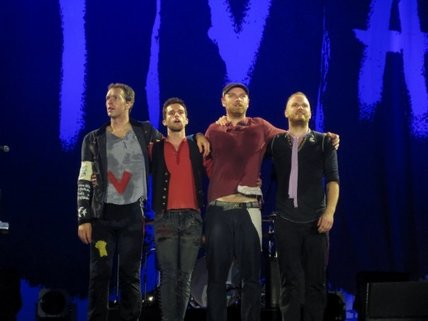
Fuente: Play Feel